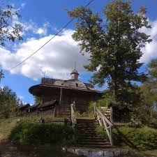
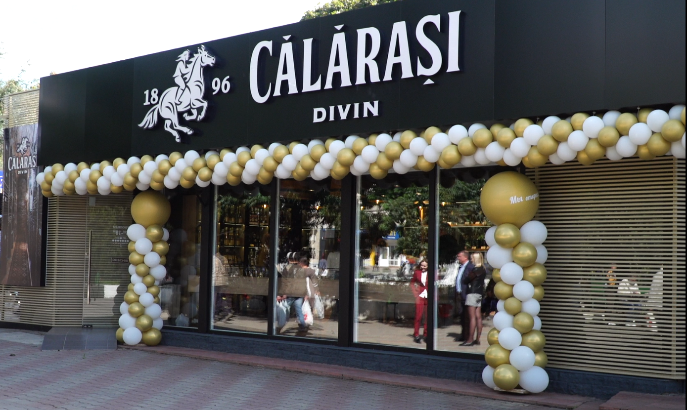
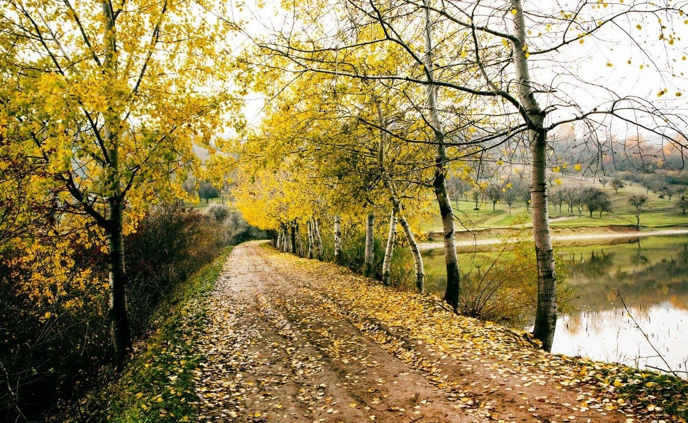

Explorează Raionul Călărași
Casa Mierii
În Raionul Călărași, satul Răciula, în curtea familiei Stegărescu am găsit un mic regat albinelor – o grădină plină de stupi, chiar și casa arătând ca un muzeu al mierii. Odată ajuns acolo, gospodarii vă vor ghida într-o excursie către secretele producerii mierii și vă vor explica efectele medicale ale produselor: miere, polen, ceară și lipici de albine. Aici puteți vedea cum lucrează albinele, printr-un stup care are pereții din sticlă. De asemenea, puteți găsi o gamă largă de produse apicole calitative, cu posibilitatea de a gusta din diferite feluri de miere. După ani de muncă asiduă și investiții grele, familia Stegărescu a reușit să îmbine apicultura cu turismul rural, chiar dacă acesta este considerat a fi o ramură subdezvoltată în Moldova.
Călărași Divin
Fabrica de divinuri “Călăraşi Divin” SRL este una din cele mai vechi fabrici vinicole din Republica Moldova, fondată în anul 1896 de către David Sarajishvili. Astăzi întreprinderea cu o istorie mai veche de 124 ani este lider în producerea băuturilor alcoolice în Republica Moldova. Amplasată in zona Codrilor, cu condiții climaterice și de sol unice, favorabile pentru obținerea materiei prime ecologic pure. Utilajul modern, tehnologiile avansate, tradițiile seculare și munca inspirată a tehnologilor “Călărași Divin” SRL permit crearea unor băuturi excepționale, care concurează cu succes cu producția producătorilor de renume mondială. Fabrica dispune de materie primă proprie, suprafața plantațiilor de viță de vie ajungînd la circa 600 ha. Gama de produse, fabricate de “Călăraşi Divin” SRL, cuprinde peste 25 denumiri de divinuri cu vîrsta de la 3 la 50 ani, cât și brandy, rachiu de vin, băuturi alcoolice aromatizate tari, vinuri liniștite și spumoase. Începând cu anul 2008, “Călăraşi Divin” SRL este certifcată în sistemul de management al calității ISO:9001. Calitatea producției “Călărași Divin” SRL a fost apreciată înalt la diverse concursuri și degustații naționale și internaționale, obținând mai mult de 50 medalii de aur și argint.
Rezervația peisagistică Temeleuți
Rezervația peisagistică Temeleuți este o arie protejată, situată între satele Temeleuți și Vălcineț din raionul Călărași, Republica Moldova. Are o suprafață de 209 ha. Obiectul este administrat de Întreprinderea silvică Călărași. Rezervația este amplasată în raionul Călărași, la est de satul Temeleuți și la sud-vest de Vălcineț. Se află la câțiva kilometri de rezervația științifică „Plaiul Fagului” și rezervația peisagistică Căbăiești–Pîrjolteni. Se situează pe un platou și pe versantul său sud-vestic, la altitudinea de 205-360 m, acoperind stâncile unui vechi hârtop. Solul este cenușiu de pădure. Rezervația include atât o serie de comunități forestiere, cât și suprafețe cu vegetație ierboasă. Pe versanți sunt multe izvoare, unul din care este începutul Bîcului. Conform unui studiu din 2012, diversitatea floristică a ariei protejate constă din 225 de specii de plante vasculare, dintre care 20 specii de arbori, 14 de arbuști și 191 de specii de plante ierboase. După criteriul provenienței, în rezervația Temeleuții au fost evidențiate patru categorii de arboreturi: natural fundamentale, parțial derivate, total derivate și artificiale. După productivitate, arboreturile sunt de productivitate mijlocie și de productivitate superioară.